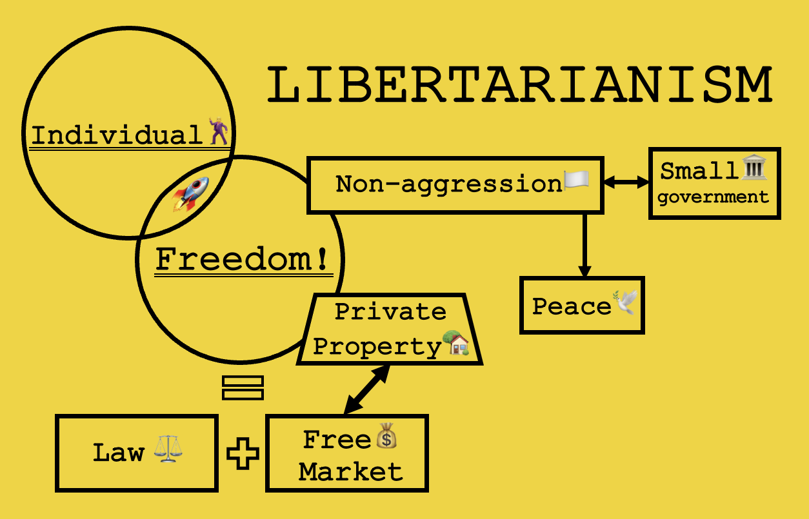
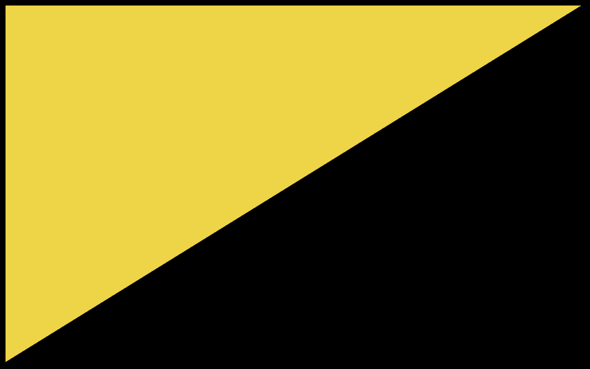
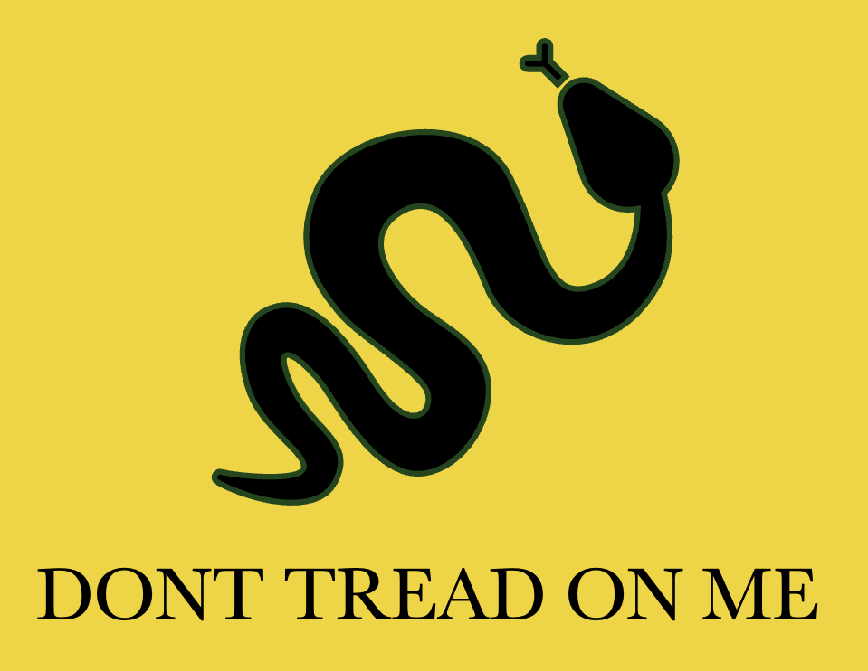
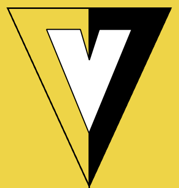
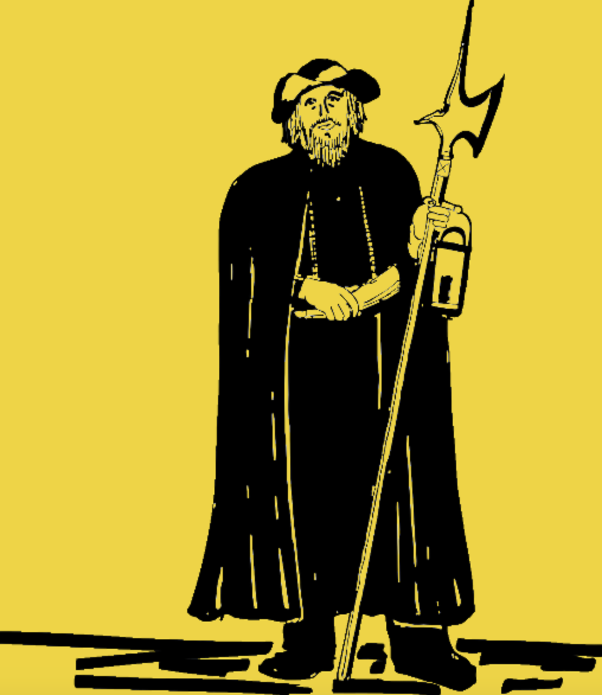
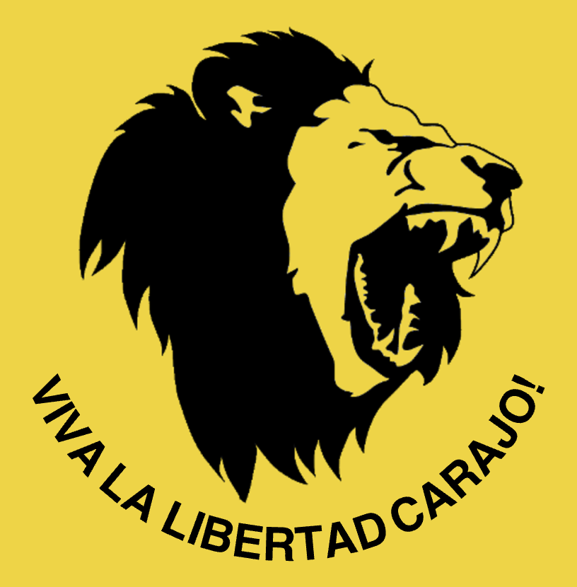

Don't Tread On Me! Give Me Liberty Or Give Me Death! Viva La Libertad Carajo!
THE FORUM
The L-Forum has been founded soon after the impressive victory of Javier Milei in the struggle for Argentinian presidency on November 19, 2023. Having become the first libertarian head of country in the history, he inspired like-minded people all over the world: supporters of uncompromisable freedom have finally asserted themselves on the international stage. With all eyes directed at free-spirited Argentina, radically contrasting with the increasingly unfree rest of the world, it seems to be the right time for libertarianism to regain attention, as it obviously got a new start.
With this idea in mind, students from Maastricht University have established an association with its own information platform. The purpose is to restudy the theory behind libertarian worldview, gather international experience, come up with different proposals, concentrate all the knowledge and practice, and eventually provide a clearly formulated alternative vision of society, economy and politics, which would be a proper response to the threat posed by descending darkness of statism and serfdom to democracy and liberty.
BASICS OF PHILOSOPHY
The key word of libertarianism is freedom. Absolute and uncompromisable. Freedom of speech, freedom of choice, freedom of individual.
The other two pillars of this philosophy are private property and non-aggression principle (NAP), meaning that you are free to do anything you want to with your property, except exposing aggression, that is attacking or cheating on other people. This is the only limit imposed on one’s freedom. For the rest – you are free as a bird in the sky.
Libertarians believe that the way to freedom is based on: (1) the rule of law, which should be formulated clearly and unambiguously, and (2) your control of property belonging to you.
The former (1) guarantees you the legal freedom, prohibiting other people from imposing their will on you, ensuring the equality of opportunity, particularly, opportunity to earn and spend.
The latter (2) gives you the factual freedom: if you are in charge of your money, you are free to spend it the way you want: go on a travel, buy a car or a house, in other words – you are free in a choice.
From this perspective, the State is a primary threat to all the three values: after all, the State has a monopoly on violence. The latter gives the government, composed of ambitious and greedy politicians, a right to attack people, impose rules and laws which take away the individual’s liberty and private property. In this quality, the State has historically proved itself to be oppressive. In fact, it uses every opportunity to limit you in your freedom by justifying such measures with the "common good", consistently downplaying the role and will of the individual and presenting itself as the only powerful player, able to achieve the "high purpose".
However, Libertarians believe the opposite. Unlike statists, they trust people and their ability to make the right choice. Every person is unique, and when unbounded, is able to tackle any challenge much better than a bunch of bureaucrats. He can even build rockets and send them into space. An individual, who proudly shrugged like Ayn Rand's Atlas, is able to raise the whole world on his shoulders and save humanity from the coming floods.
This faith is leading libertarians to the simple socio-economic equation: individual + freedom = happiness, which characterises all their factions, ranging from minarchists and objectivists to anarcho-capitalists and voluntaryists. And thus, it is the basis of the philosophy that the L-Forum aims to promote on this platform.

SYMBOLS & SLOGANS
ANCAP FLAG

Anarcho-Capitalist Flag:
Whilst black stands for anti-statism, gold (yellow) color symbolyses capitalism. As one has probably already noticed, this website is designed in the same color spectrum.
GADSDEN FLAG

Gadsden Flag:
The most famous banner used by libertarians all around the world, designed by Christopher Gadsden in 1775 during American Revolutionary War for independence.
V

V:
A symbol, derived from the Ancap flag, commonly used by voluntaryists, rejecting the state in favor of volutary participation in society, unforced by any authority.
NIGHT WATCHMAN

Night-Watchman State:
This term is popularised by minarchists, describes a small government, ensuring law and protecting people from aggression through the military, police, and courts.
LIBERTAS
Statue of Liberty:
There is hardly any more famous symbol than the New York sculpture, representing Libertas, the Roman goddess of liberty, enlightening the world with a torch aloft.
VIVA LA LIBERTAD CARAJO!

Viva La Libertad Carajo!:
"Live Long the Fucking Freedom!" is a slogan used by Javier Milei during election in Argentina, symbolising voters fed up with the State and willing Freedom.
THE FORUMERS
As it has already been mentioned, the Libertarian Forum is not only a web platform, but also an association founded by Economics and Business students from Maastricht University in the Netherlands. Below you can find the list of members and get to know us better!
VANVIK

I'm a second-year Economics student, the founder of the Libertarian Forum & creator of this website. I believe in a private initiative to be the driver of human progress, whilst the state intervention its main drag.
A
...
...
...
...
...
B
...
...
...
...
...
C
...
...
...
...
...
D
...
...
...
...
...